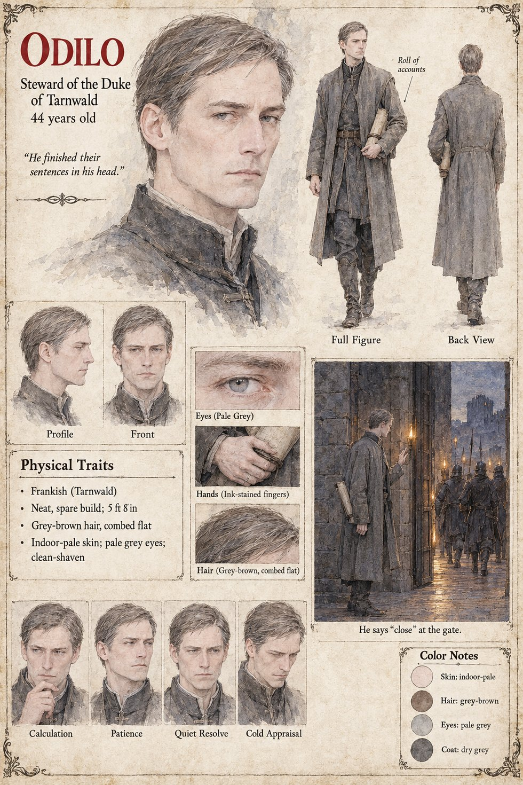

Odilo, Steward of Tarnwald
Steward of the Duke of Tarnwald · not the Hierarch Odilo of Cases 2231 and 0202 · 44 years old
The Duke of Tarnwald's steward, the dry man of Gerold's page who sees that a thing will be done by arranging for it to be done twice: a neat, spare Frank of Tarnwald of about 5 ft 8 in, with grey-brown hair combed flat, an indoor-pale clean-shaven face, pale grey eyes and ink-stained fingers, a roll of accounts under his arm. He is not the Hierarch Odilo of Cases 2231 and 0202, whose page belongs to another man. The other pages give him two kinds of business. He buys information: Sigebert Marl sells the Duke's steward a tally of eighty-nine swords for sixty marks and, for forty, arranges for two of his clerks to go over the old wall behind the forge. And he buys back the past: in the second year he rides the Aure marches, takes the sword that cost the Rich Merchant's Son his horse, and returns the horse with a polite note; the Low Forge blade on the Mended Stirrup's sheet, Sold Back to Odilo, Thirty Times the Price, is his purchase (Chapter 9), though the pages do not say that it is the same blade as the one he takes from the Rich Merchant's Son.
On the Uncounted night he sends Gerold with twenty men to the Low Forge, as a precaution. On the Uncounted Day, a quarter of an hour after the Duke (Waldo) has passed through toward the bridge, he sees three barges of the Countess's levies coming down under the north bank toward the water-stair, and says a single word to the captain of the gate-tower, close. He means the little door at the foot of the stair; he has not said which door, nor bar, and the great gate shuts for the first time in three hundred years. The sheet's scene, He says “close” at the gate, draws the moment: the steward stands at an iron-bound gate with a hand raised while torchlit men in helmets and spears file past beyond it. The sheet does not say which door he means.
The publication notes add that he bids at every candle sale, plans the Uncounted Day gambit and walks, never rides, into battle, and that the text twice puts twenty-two years on his service. Berthar's notes have him stay behind in Chapter 16 to bury the steward, presumably this one. His pull-quote, He finished their sentences in his head, is the sheet's own line, and his expression panels run Calculation, Patience, Quiet Resolve and Cold Appraisal. Written from the sheet, from what the other Case 4181 pages already say, and from the character notes in the case's publication-prep file; the manuscript itself was not to hand. His age of 44, Frankish origin in Tarnwald, neat spare build of about 5 ft 8 in, grey-brown hair, pale grey eyes and dry grey coat are the sheet's own.
“He finished their sentences in his head.”